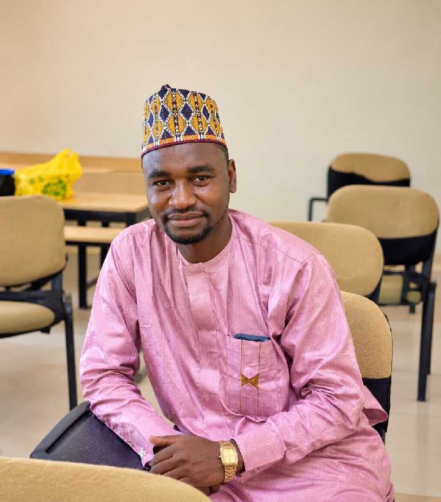

Ismail Yahaya
Welcome to my portfolio!
I am Ismail Yahaya, a 100 Level BSc Computer Science student at Miva Open University. I am passionate about web technologies, creative storytelling through video, and building simple solutions that help people. This website showcases my profile, skills, projects and helps me manage my academic activities.
My Skills at a Glance
Web Development
HTML, CSS, JavaScript - building responsive websites like this one.
Video Editing
Storytelling, transitions, sound and visual pacing for creators.
Customer Support
Clear communication, problem solving and helping users - creator of ShiftLog It.
My Intro Video
Transcript: Hello, and welcome to my portfolio. My name is Ismail Yahaya. I am a 100 Level student studying BSc Computer Science at Miva Open University. I am passionate about web technologies, video editing, and building simple solutions that help people. One of my projects is ShiftLog It, a customer support solution app I created to help businesses respond faster to customers and organise their enquiries. I also do video editing, where I use storytelling and clean visuals to help creators share their message. This website shows my profile, my skills, my projects, and how I manage my academic work. Thank you for visiting. Feel free to explore my projects and contact me.
To complete: Record your 45-second video and save it as intro-video.mp4 in the same folder as index.html